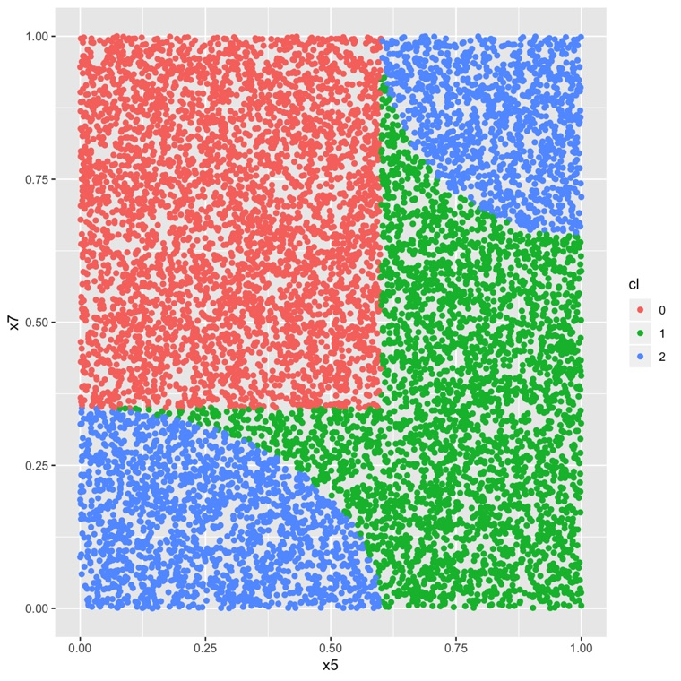
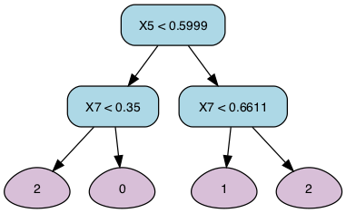
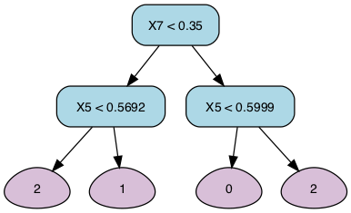
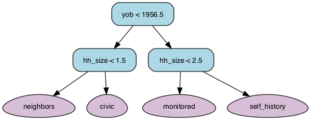
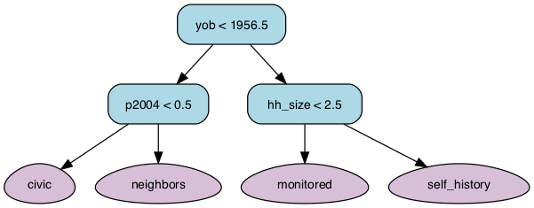

- \(O_p\bigl(\kappa(\Pi)\sqrt{V_*/n}\bigr)\)傾向スコアと結果のモデルの推定誤差の積が \(o(1/n)\) なら、CAIPWL の後悔はこの速さで小さくなる（定理 3）。下界と合わせて、n についてミニマックスの速さになる。
- 1 秒未満 vs 約 3 時間深さ 3 の木（分岐 2 段）で特徴量 10 個、行動 3 個のとき、木の探索は 1,000 点を 1 秒未満で解いた。MIP は 500 点に約 3 時間かかった（論文 6.3 節）。
- 後悔 0.039 vs 0.2153 つの行動のシミュレーション（n = 2,500、400 回の平均）で、CAIPWL と厳密な探索の組み合わせは 0.039、IPW と厳密な探索は 0.215 だった（論文 Table 2）。
傾向スコアが未知の多値の方策学習では、後悔が 1/√n で減る方法が知られていなかった
データは \(n\) 人分の \((X_i, A_i, Y_i)\) で、\(X_i\) は特徴量、\(A_i\in\{a^1,\dots,a^d\}\) はとられた行動、\(Y_i=Y_i(A_i)\) は観測した結果である。ほかの行動をとったときの結果 \(Y_i(a)\) は観測できない。方策 \(\pi\) は特徴量を行動に写す規則で、その価値を \(Q(\pi)=\mathbb{E}[Y(\pi(X))]\)、方策のクラス \(\Pi\) で最良の方策 \(\pi^*\) との差を後悔 \(R(\pi)=Q(\pi^*)-Q(\pi)\) と呼ぶ。仮定は、\(X\) を条件とすれば行動の選ばれ方が結果と独立なこと（無交絡）、どの行動も確率 \(\eta>0\) 以上で選ばれること（重なり）、結果が有界なことである。
傾向スコア \(e_a(x)=\Pr(A=a\mid X=x)\) が既知なら、次の IPW 推定量を最大にする方策は 1/√n の速さで後悔を減らせる。
傾向スコアが未知で推定値 \(\hat e_a\) を代入すると、後悔は \(\hat e_a\) の二乗平均誤差が減る速さに左右される。論文の例では局外関数を \(n^{-1/4}\) の速さでしか推定できないとき、IPW にもとづく方法の後悔の上界は \(O_p(n^{-1/4})\) にとどまる。二値の行動では Athey と Wager が傾向スコア未知でも \(O_p(1/\sqrt n)\) を示していた。ただしその方法は 2 つの行動を \(\pm1\) に埋め込み、処置効果の推定値を中心に組み立てるので、多値にそのまま広げられない。多値の既存研究（Swaminathan と Joachims、Zhou ら 2017、Kallus）の上界は、どれも n への依存が最適ではなかった。
CAIPWL は交差適合で作った二重頑健なスコアの和を最大にする方策を選ぶ
行動を \(d\) 次元の単位ベクトルで表す。データを \(K\) 個のフォールドに分け、各フォールド \(k\) について、残りの \(K-1\) 個のフォールドから結果のモデル \(\hat\mu_a^{-k}(x)\) と傾向スコア \(\hat e_a^{-k}(x)\) を推定する。そのうえで、各人 \(i\) について行動ごとのスコアを並べたベクトル
を作る。\(k(i)\) は \(i\) を含むフォールドである。方策の価値の推定値は \(\widehat Q_{\mathrm{CAIPWL}}(\pi)=\frac1n\sum_i\langle\pi(X_i),\hat\Gamma_i\rangle\)、つまり各人について方策が選んだ行動のスコアを拾って平均したもので、これを \(\Pi\) の上で最大にする方策を返す（アルゴリズム 1）。
局外関数の推定には次の条件だけを課す（仮定 2）。行動ごとに、結果のモデルの二乗平均誤差と傾向スコアの二乗平均誤差の積が \(o(1)/n\) であればよい。たとえば両方が \(o(n^{-1/2})\) なら満たされ、一方の精度が低くても他方が高ければ補える。交差適合は、各人のスコアに使う推定値がその人の結果と独立になるようにするための仕組みで、ハイパーパラメータの選択には使わない。論文はこれが理論の保証に欠かせず、実際の汎化誤差も減らすと述べている。実験では傾向スコアを多クラスのロジスティック回帰で、結果のモデルをランダムフォレストと一般化ランダムフォレスト（GRF）を組み合わせて推定している。
局外関数の推定が 1/√n より遅くても、CAIPWL の後悔は 1/√n の速さで小さくなる
方策のクラスの複雑さはハミング距離による被覆数から作るエントロピー積分 \(\kappa(\Pi)=\int_0^1\sqrt{\log N_H(\epsilon^2,\Pi)}\,d\epsilon\) で測る。被覆数の増え方が \(\log N_H(\epsilon,\Pi)\le \log C+D\,\epsilon^{-\omega}\)（\(\omega<0.5\)）で抑えられること（仮定 3）と仮定 1・2 のもとで、任意の \(\delta>0\) に対してある \(N_\delta\) があり、\(n\ge N_\delta\) なら確率 \(1-2\delta\) 以上で次が成り立つ（定理 3）。
証明は 2 段に分かれる。まず真の \(\mu_a\)・\(e_a\) を使ったスコア \(\Gamma_i\) で選んだ方策について、方策の差の関数のクラスに対する多クラスのラデマッハ複雑度を抑え（定理 1）、同じ上界の後悔を示す（定理 2）。次に、推定したスコアによる価値の差と真のスコアによる価値の差のずれが、すべての方策の組について一様に \(o_p(1/\sqrt n)\) になることを示す（補題 3）。このずれは「推定誤差×ノイズ」「ノイズ×推定誤差」「推定誤差×推定誤差」の 3 項に分解でき、交差適合がこの評価を支えている。論文は、価値そのものではなく 2 つの方策の価値の差を集中させることが、鋭い上界を得る鍵だと述べている。
Kitagawa と Tetenov が示した \(\Omega(1/\sqrt n)\) の下界と合わせると、この速さは n についてミニマックス最適になる。論文は多値の方策学習でこの種の結果を得たのは知る限り初めてだとしている。行動が 2 つのときは \(\kappa(\Pi)\le2.5\sqrt{\mathrm{VC}(\Pi)}\) となり、\(O_p(\sqrt{V_*\,\mathrm{VC}(\Pi)/n})\) に帰着する（系 1）。深さ \(L\) の木のクラス \(\Pi_L\)（\(p\) は特徴量の数、\(d\) は行動の数）では
なので（補題 4）、\(L,p,d\) を固定すれば後悔は \(O_p(\sqrt{V_*/n})\) になる（定理 4）。行動の数への依存は \(\sqrt{\log d}\) で、Kallus の上界を木に当てはめた場合の \(d^2\) より緩やかだと論文は比べている。
論文の木の深さは Bertsimas と Dunn の数え方で、葉の層も 1 つと数える。深さ \(L\) の木は分岐が \(L-1\) 段で、葉は \(2^{L-1}\) 個ある。実験の「深さ 3 の木」は分岐 2 段・葉 4 個の木である（図3 参照）。
木の方策の学習は MIP で厳密に解けるが、500 点で約 3 時間かかる
方策のクラスを深さ \(L\) の木にすると、最大化 \(\max_{\pi\in\Pi_L}\sum_i\langle\pi(X_i),\hat\Gamma_i\rangle\) は混合整数計画（MIP）で書ける。Bertsimas と Dunn の最適分類木にならい、特徴量を \([0,1]^p\) に正規化して次の変数を置く。
- 分岐ノード \(t\) ごとに、使う特徴量を選ぶ 0–1 ベクトル \(a_t\)（\(\sum_q a_{tq}=1\)）としきい値 \(0\le b_t\le1\)。比較は \(a_t^\top X_i<b_t\)。
- 点 \(i\) が葉 \(t\) に入るかを表す \(f_{it}\in\{0,1\}\)（\(\sum_t f_{it}=1\)）。
- 葉 \(t\) に行動 \(k\) を割り当てるかを表す \(p_{kt}\in\{0,1\}\)（\(\sum_k p_{kt}=1\)）。
目的関数は \(\sum_i\sum_k\sum_t f_{it}\,p_{kt}\,\hat\Gamma_{ik}\) という 2 次式で、点が葉 \(t\) に入るときだけ、その葉までの経路の分岐条件を課す。厳密な不等号は扱えないので、最適分類木と同じく、特徴量ごとに異なる値の最小の差 \(\epsilon_q\) を足して非厳密な不等式に直す。この MIP の解がそのまま \(\hat\pi_{\mathrm{CAIPWL}}\) になる。
変数の数は \((p+1)(2^{L-1}-1)+(n+d)\,2^{L-1}\) で、n について線形に増える。それでも解く時間は最悪で変数の数の指数で増える。\((n,p,L,d)=(500,10,3,3)\)、変数 2,045 個の問題は、MacBook Pro（2.2 GHz Intel Core i7、16 GB）で約 3 時間かかった。1,000 点を超えると 1 日では終わらなかったという。さらに、市販のソルバーの中身は見えないので、解く前に時間を見積もれない。論文はこれを MIP の欠点に挙げている。
親の分岐を固定すると左右の部分木が独立な問題に分かれるので、再帰的な探索で最適な木が求まる
論文が代わりに作ったのが、木の全体を厳密に探索するアルゴリズム（アルゴリズム 2）である。根で分岐に使う特徴量と分割点を固定すると、データは左右に分かれ、最適な木を求める問題は左の部分木と右の部分木の 2 つの小さな問題に分かれる。そこで、特徴量ごとにデータを並べ替え、すべての分割点について左右を深さ \(L-1\) で再帰的に解き、スコアの和が最大の組を採用する。深さ 1（葉だけ）では、スコアの和 \(\sum_i\hat\Gamma_i(j)\) が最大の行動 \(j\) を選ぶ。
付録の計算量の評価では、特徴量が連続で値がすべて異なるとき、厳密な探索（\(A=1\)）の時間は \(L\ge2\) で \(O\bigl(2^{L-1}(np)^{L-1}d+pn\log n\bigr)\) になる。深さを固定すれば n の多項式である。特徴量 \(i\) が \(K_i\) 通りの値しかとらなければ探索する分割点が減り、すべて二値なら \(O(2^{L-1}p^{L-1}nd+pn\log n)\) と n についてほぼ線形になる。最初に一度だけ並べ替えておく、同じ部分集合の結果を覚えておく（メモ化）といった工夫も実装されている。
近似のつまみとして、分割点を \(A\) 点ずつ飛ばして探すこともできる。このとき時間は \(O\bigl(2^{L-1}npd\,(np/A)^{L-2}+pn\log n\bigr)\) になる。\((1000,10,3,3)\) の問題は MIP と同じノートパソコンで 1 秒未満で解け、数万点なら数秒、数百万点でも数時間で扱えると論文は述べている。探索の時間は問題の大きさから前もって見積もれる。論文はこれも MIP にない利点に挙げている。
3 つの行動のシミュレーションでは、二重頑健なスコアと厳密な探索を組み合わせた方法の後悔が最も小さかった
特徴量は \([0,1]^{10}\) の一様分布で、行動は 0・1・2 の 3 つである。行動の選ばれやすさと平均の結果は \(x_5\) と \(x_7\) で決まる 3 つの領域ごとに変わり、領域 \(j\) では行動 \(j\) が最適になる。行動を選ぶ確率は領域 0・1 で (0.2, 0.6, 0.2)、領域 2 で (0.4, 0.2, 0.4) である。平均の結果は領域 0 で \(3-a\)、領域 1 で \(2-|a-1|/2\)、領域 2 で \(1.5(a-1)\) とし、分散 4 の正規ノイズを足す。結果の最大値 2 に対してノイズの標準偏差も 2 なので、信号がノイズに埋もれやすい設定である。木の深さは 3（分岐 2 段）とした。



比べたのは 7 つの方法である。スコアは CAIPWL の二重頑健なスコアか、交差適合を加えた IPW（IPWL）のどちらかを使う。最適化は厳密な探索（opt、\(A=1\)）、10 点ずつ飛ばす探索（skip、\(A=10\)）、各ノードで深さ 2 の木を仮定して分岐を決める貪欲法（greedy）の 3 通りで、これに、行動を一様にランダムに選ぶ方策を加える。フォールド数は 5 で、学習した木の後悔を独立な 15,000 点のテストデータで測り、400 回の平均をとった。
論文は 2 つの点を挙げている。1 つ目は、最適化の方法を揃えると CAIPWL のほうが IPWL より効率がよく、学習した方策のばらつきも小さいことである。IPW は推定した傾向スコアだけで重みづけるので、傾向スコアが小さいところで推定値が大きく揺れる。CAIPWL は結果のモデルを足してこの揺れを抑える。n = 2,500 で CAIPWL はすでに最適に近いという。2 つ目は、ほかの条件を揃えると貪欲法は opt や skip よりずっと悪く、opt と skip は同程度（opt がわずかに良い）だったことである。貪欲法の誤差には推定のノイズによる分割点のずれに加えて、図3b のように分ける変数そのものを誤る構造の誤りがある。論文は、推定と最適化の一方が足りないと他方で補えるので、両方の最良を組み合わせることが大切だとまとめ、信号が弱い場面での計算の効率まで考えると CAIPWL-skip が最良の選択だとしている。
投票の働きかけの実験データでは最良の一律の手紙と同程度の木を学び、異質性を足すと正しい木を学んだ
Gerber ら（2008）が 2006 年 8 月のミシガン州の予備選挙で行った実験のデータで、180,002 人（それぞれ別の世帯）を含む。特徴量は生年、性別、世帯人数、市と、過去の総選挙・予備選挙での投票の有無の 10 個である。行動には、何もしない（Nothing）、「市民の義務」の手紙（Civic）、「投票したかを調べている」と伝える手紙（Monitored）、本人と同じ世帯の過去の投票記録を載せた手紙（Self History）、近所の人の投票記録まで載せた手紙（Neighbors）の 5 つがある。行動は確率 10/18、2/18、2/18、2/18、2/18 で無作為に割り付けられ、結果は予備選挙で投票したかどうか（0/1）である。
深さ 3 の木を厳密な探索で学習した。傾向スコアはランダムフォレストで推定し、0.1 で下限を切った。データを 5 つのフォールドに分け、4 つで学習した木を残りの 1 つで AIPW 推定量により評価し、5 回の平均をとった。表の数値は行の方策と列の方策の価値の差である。
| 価値の差（行 − 列） | ランダム | Nothing | Civic | Monitored | Self History | Neighbors |
|---|---|---|---|---|---|---|
| CAIPWL の木 | 0.046*** | 0.082*** | 0.061*** | 0.056*** | 0.031*** | 0.00042Δ |
| IPWL の木 | 0.042*** | 0.078*** | 0.057*** | 0.052*** | 0.027*** | −0.0038** |
論文 Table 3（arXiv v2）。*** は p < 0.0001、** は p < 0.001。Δ の p 値は表の注では 0.27、本文では 0.47 と書かれており、一致しない（解説者の注）。どちらでも有意ではない。
一律の方策のなかでは Neighbors が最も良く、これは Gerber らの報告と合う。CAIPWL と IPWL の木はどちらもほかの 5 つの方策より有意に良かったが、IPWL は Neighbors より有意に悪く、CAIPWL は Neighbors と有意な差がなかった。論文はここから、このデータには（有意な）効果の異質性がないと読んでいる。表は 1 回の分割の結果だが、分割を変えても CAIPWL は Neighbors と同程度、IPWL は有意に悪いという傾向は共通していたという。学習には 144,000 点を使い、特徴量がすべてカテゴリなので、ノートパソコンで数秒で終わった。
次に、弱い異質性を人工的に加えた。50 歳未満で世帯が 2 人以下の人は Monitored を、50 歳未満で 3 人以上の人は Self History を、50 歳以上で 2 人以上の世帯の人は Civic を好むとする。Nothing 以外の行動を受けた人について、受けた行動が好みと合えば結果を確率 \(p=0.07\) で 0 から 1 に、合わなければ 1 から 0 に反転させる。このデータでは CAIPWL と IPWL の木がどちらも 6 つの一律の方策すべてより有意に良く、Neighbors との差は CAIPWL が 0.027、IPWL が 0.021 だった（論文 Table 4）。


CAIPWL の木は 3 つの集団すべてに好みの行動を割り当て、手を加えていない「50 歳以上の単身世帯」には Neighbors を残している。IPWL はフォールドごとに異なる木を学び、たいてい 1 つの変数を誤って使っていたという。
単変量の分岐の浅い木を、二重頑健なスコアの和を目的にして、再帰的な全探索か MIP で厳密に学ぶ
- 分岐の種類：単変量（1 つの特徴量としきい値で左右に分ける）。深さを固定し、各葉に行動を 1 つ割り当てる。MIP では葉の行動を確率にゆるめた確率的な木も書けるとしている。
- 目的関数：交差適合した AIPW スコアの和 \(\sum_i\langle\pi(X_i),\hat\Gamma_i\rangle\)、つまり推定した方策の価値の最大化。分類の誤りや結果の予測誤差は目的に入らない。
- 制約：木の深さだけ。論文は公平性・予算・関数の形などの制約を方策のクラス \(\Pi\) で表せると述べるが、本文の木の定式化に予算の制約は入っていない（arXiv v2）。
- 解き方：特徴量と分割点をすべて試して左右を再帰的に解く探索（近似のつまみ \(A\) つき）と、市販のソルバーで解く MIP の 2 通り。
- 最適性の保証：どちらも与えられたスコアのもとで深さ \(L\) の木の中の最適解を返す（探索は \(A=1\) のとき）。統計的には、後悔が \(O_p(\sqrt{V_*/n})\) で小さくなる（定理 4）。
- データ：合成データ（特徴量 10 個、行動 3 個）と、Gerber らの投票の働きかけの実験（180,002 人、行動 5 個）。
リストのなかでこの論文は、二値の処置の方策学習（Athey と Wager）を多値の行動に広げ、木を厳密に探索する方法を加えた論文にあたる。MIP の定式化は最適分類木にならっていて、論文は分類を方策学習の特殊な場合とみて、自分たちの MIP が最適分類木の MIP をほぼ含むと述べている。最適分類木の目的が分類の誤りなのに対し、ここでの目的は行動ごとのスコアを葉で拾った和である。リストの Optimal Policy Trees と Jo ら は、この論文の方法（policytree）を比較の相手にしている。
（解説者の注）探索の時間は \((np)^{L-1}\) で増えるので、厳密に解けるのは浅い木に限られる。論文自身も、深い木では厳密な最適化はできないと脚注で認め、大きな n と浅い木の組み合わせで特に有効だと述べている。arXiv v2 の本文には policytree という名前は出てこない。ただし R パッケージ policytree（grf-labs）は、その方法の文献にこの論文の出版版を挙げている。
このページの数値・定理番号・図表番号は arXiv 版 v2（2018 年 11 月 19 日）による。Operations Research の出版版（2023 年）は出版社が自動取得を拒んだため照合していない。出版版の要旨は文脈つきの一位価格オークションへの応用にも触れており、内容や番号が arXiv 版と異なる可能性がある。書誌と著者の所属は Crossref で確認した（arXiv v2 では Zhou の所属は Stanford 大学 電気工学科）。
@article{zhou2023offline,
title = {Offline Multi-Action Policy Learning: Generalization and Optimization},
author = {Zhou, Zhengyuan and Athey, Susan and Wager, Stefan},
journal = {Operations Research},
volume = {71},
number = {1},
pages = {148--183},
year = {2023},
publisher = {INFORMS},
doi = {10.1287/opre.2022.2271}
}